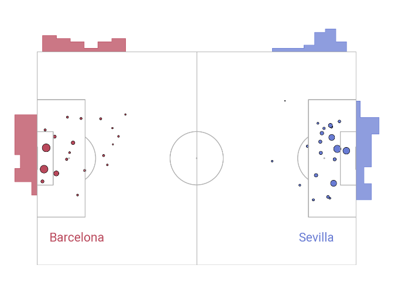
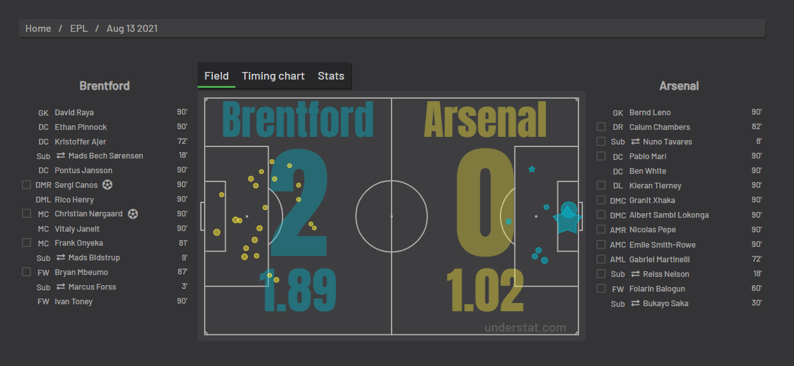
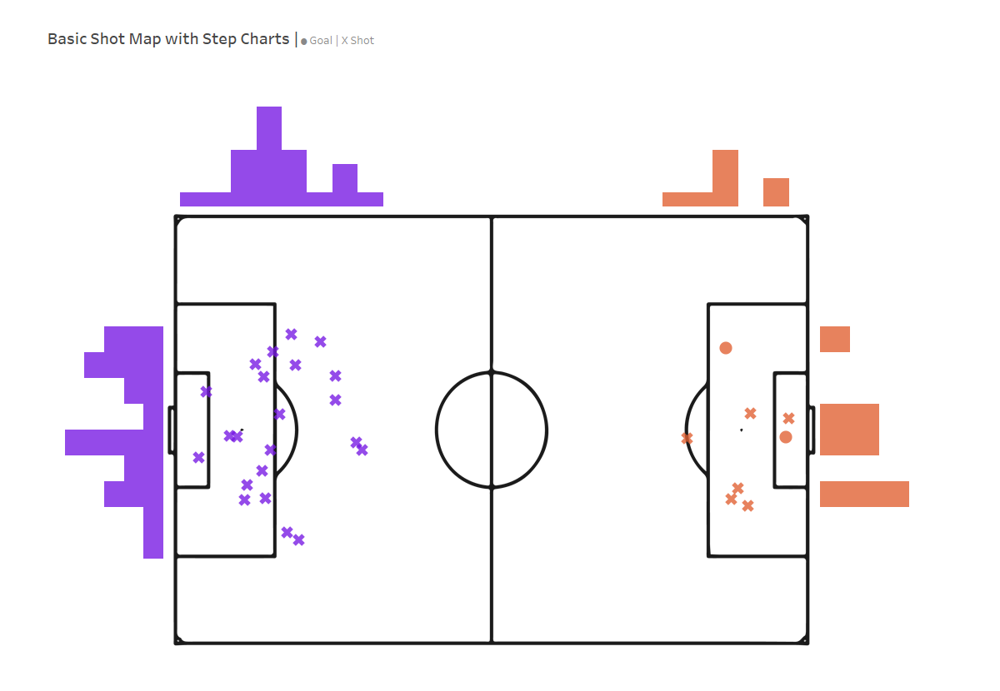
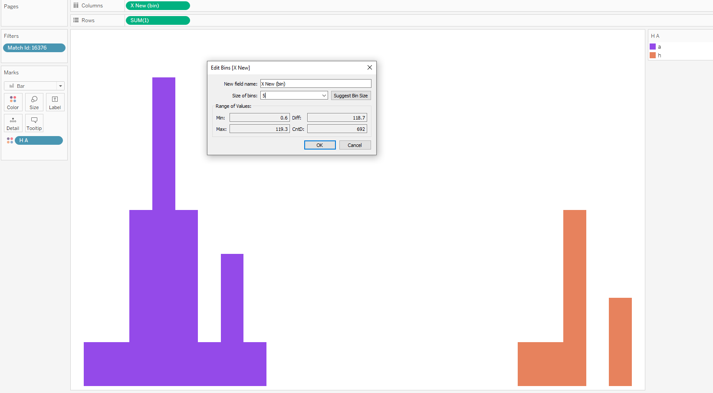
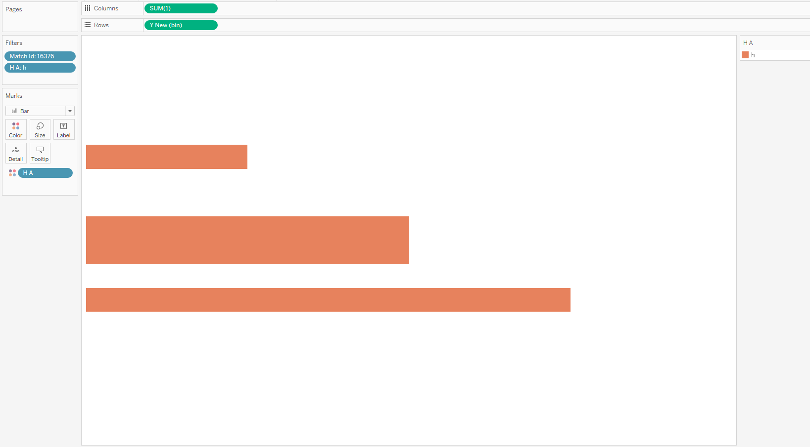

Hi all,
Back to some basics this week. I've previously written extensively on soccer shot maps, looking at hex bins, heat maps, zones. This week we go back to our roots with the most simple shot map there is possible.
Simple X and Y co-ordinates plotted on the pitch. If you're new round here, by all means check out my very first tutorialon this topic.
Today we will be making a small addition to our standard shot maps, by adding in step charts.
If you would prefer to do this in python instead of Tableau, I've taken the inspiration from the mplsoccer site, read more here.

Todays shot map data looks back to this match between Brentford and Arsenal from 2021. (No reason other than it just happens to be the data I had to hand at the time - of course use any match of your choosing - You will find a copy in the repo at the top of the page)

Step charts are useful to see the overall frequency of shots from designated zones. Of course we would both want and expect better chances to occur if created more front on to the goal and not wider as well as being able to determine shot frequency from distance from the goal, though this would hugely depend on the type of shot (header, foot etc)

Hopefully, by reading my original Understat blog post, I can assume you are comfortable with mapping on a background image, as well as plotting X and Y co-ordinates, though do message me if you get stuck and download the workbook.
As a reminder, we split the x and y co-ordinates based on team (mirroring them each side) using the following calculations:
X New
if [H A]= "a" then
-([X]*120)+120
ELSEIF [H A]="h" then
[X]*120
END
Y New
if [H A]= "a" then
-([Y]*80)+80
ELSEIF [H A]="h" then
[Y]*80
END
Now, Lets look at the Step Charts.
First we want to create a sheet to place above the top of the pitch.
Create a Bin from X New - Set the suggested bin size to 5.

When you first build the chart, the bin will be discrete. This is okay, but what you will find is that we need the axis to stretch the length of our pitch co-ordinates.
Convert the bin to continuous.
Make the appropriate cosmetic changes, I like to make my bars fixed width with no border.
Adjust the axis, fixing it to the pitch length. (-2 , 122)
Next we want to create the right and left hand bars.
Create a Bin from Y New - Set the suggested bin size to 5.

We can copy the sheet, replacing the filter to the other team.
Adjust the columns pill from sum(1), to sum(-1) to invert the axis.
Again, edit the axis to accommodate the full length of the pitch, making it fixed.
From there it is a matter of mastering your containers to place the 4 sheets on the dashboard!
Should be a nice easy one to re-create. Message me if you have any questions. Speak soon,
LOGGING OFF,CJ